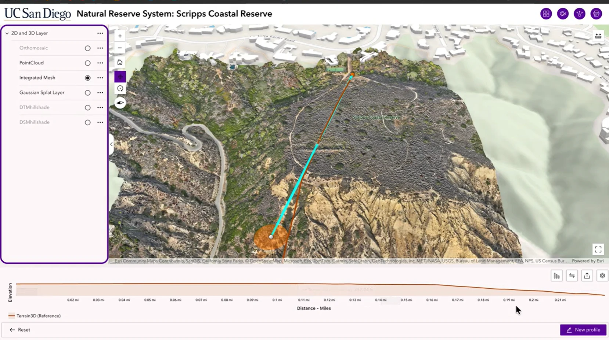

The project
I created a model of Scripps Coastal Reserve to make its coastal terrain easier to explore. The scene places the textured reserve alongside nearby campus buildings and the shoreline, allowing the landscape to be understood from both an overhead view and an oblique perspective.
One place, several representations
The layer selector lists an orthomosaic, point cloud, integrated mesh, Gaussian splat layer, DTM hillshade, and DSM hillshade. The orthomosaic provides an overhead image; the point cloud represents sampled positions; the mesh gives the landscape a textured surface. The listed terrain and surface hillshades support comparison of ground form and above-ground features. The screenshots show the integrated mesh selected.

How the viewer works
The recording demonstrates setting up the scene header, layer list, navigation, and export options, then exploring the model in the web experience. Pan, zoom, and camera rotation let a visitor inspect the bluffs and vegetation from different directions. Switching mapping products supports visual comparison without losing the geographic context.
Tracing the terrain
A drawn line connects a location in the 3D scene with an elevation profile below it. The profile helps a reader follow changes in elevation along a route and relate the graph to the landscape. In the supplied demonstration, the graph uses Terrain3D (Reference), so its elevations should not be interpreted as a survey-accuracy validation of the drone mesh.
What it communicates
The model is a visual record and an exploratory interface for the reserve. It can help explain terrain and the relationship between the coastal bluff and surrounding development. This presentation does not establish erosion rates or change over time; those questions would require comparable repeat surveys and an accuracy assessment.
Report based on my supplied screenshots and August 5, 2026 screen recording. The recording documents the viewer workflow; only still images are included here.
Discuss a similar project ↗